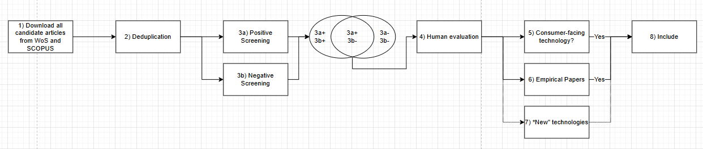

Progress Update and Open Questions
2026-06-03
With this project, our primary aim is to contribute to resolving the jingle-jangle fallacy (Wulff & Mata, 2025) in the domain of consumer-technology-interaction in marketing and consumer-behavior research. We aim to provide an overview over the technologies that have been studied, their essence, and the extent towards which these essences and technologies overlap or diverge, and what implications this should have for the understanding of our field and future research.
This project is aimed at the community of researchers in the consumer-technology domain.
\(\rightarrow\) Bottom-up assessing of technologies based on all articles published since 2000 in the following journals:
Definition Technology:
“scientific knowledge and/or its application for firms and/or consumers with the potential to influence the activity, institutions, and processes for creating, communicating, delivering, and exchanging offerings that have value for customers, clients, partners, and society at large.” (Hoffman et al., 2022, p. 2)
Definition Consumer-facing Technology:
“A consumer-facing technology is a technology that consumers / end users directly interact with or directly experience.”
Definition Empirical:
“An empirical article reports research that is based on observation and measurement of phenomena.” (University of South Carolina, 2026)

mp...), dimensionality reduction (UMAP, \(d = 10, dist = 0\)), and subsequent k-means clustering
Technology clusters based on k-means clustering. Map coordinates are based on UMAP dimensionality reduction with cosine distance, two components, min_dist = 0.05, and dynamic n_neighbors = min(15, N − 1). Coordinates are used only for visualization.
Technology clusters based on k-means clustering. Map coordinates are based on UMAP dimensionality reduction with cosine distance, two components, min_dist = 0.05, and dynamic n_neighbors = min(15, N − 1). Coordinates are used only for visualization.
Technology clusters based on k-means clustering. Map coordinates are based on UMAP dimensionality reduction with cosine distance, two components, min_dist = 0.05, and dynamic n_neighbors = min(15, N − 1). Coordinates are used only for visualization.
Technology clusters based on k-means clustering. Map coordinates are based on UMAP dimensionality reduction with cosine distance, two components, min_dist = 0.05, and dynamic n_neighbors = min(15, N − 1). Coordinates are used only for visualization.
Technology clusters based on k-means clustering. Map coordinates are based on UMAP dimensionality reduction with cosine distance, two components, min_dist = 0.05, and dynamic n_neighbors = min(15, N − 1). Coordinates are used only for visualization.
Mechanism clusters based on k-means clustering. Map coordinates are based on UMAP dimensionality reduction with cosine distance, two components, min_dist = 0.05, and dynamic n_neighbors = min(15, N − 1). Coordinates are used only for visualization.
Mechanism clusters based on k-means clustering. Map coordinates are based on UMAP dimensionality reduction with cosine distance, two components, min_dist = 0.05, and dynamic n_neighbors = min(15, N − 1). Coordinates are used only for visualization.
Mechanism clusters based on k-means clustering. Map coordinates are based on UMAP dimensionality reduction with cosine distance, two components, min_dist = 0.05, and dynamic n_neighbors = min(15, N − 1). Coordinates are used only for visualization.
Mechanism clusters based on k-means clustering. Map coordinates are based on UMAP dimensionality reduction with cosine distance, two components, min_dist = 0.05, and dynamic n_neighbors = min(15, N − 1). Coordinates are used only for visualization.
Mechanism clusters based on k-means clustering. Map coordinates are based on UMAP dimensionality reduction with cosine distance, two components, min_dist = 0.05, and dynamic n_neighbors = min(15, N − 1). Coordinates are used only for visualization.
Essence clusters based on k-means clustering. Map coordinates are based on UMAP dimensionality reduction with cosine distance, two components, min_dist = 0.05, and dynamic n_neighbors = min(15, N − 1). Coordinates are used only for visualization.
Essence clusters based on k-means clustering. Map coordinates are based on UMAP dimensionality reduction with cosine distance, two components, min_dist = 0.05, and dynamic n_neighbors = min(15, N − 1). Coordinates are used only for visualization.
Essence clusters based on k-means clustering. Map coordinates are based on UMAP dimensionality reduction with cosine distance, two components, min_dist = 0.05, and dynamic n_neighbors = min(15, N − 1). Coordinates are used only for visualization.
Essence clusters based on k-means clustering. Map coordinates are based on UMAP dimensionality reduction with cosine distance, two components, min_dist = 0.05, and dynamic n_neighbors = min(15, N − 1). Coordinates are used only for visualization.
Essence clusters based on k-means clustering. Map coordinates are based on UMAP dimensionality reduction with cosine distance, two components, min_dist = 0.05, and dynamic n_neighbors = min(15, N − 1). Coordinates are used only for visualization.